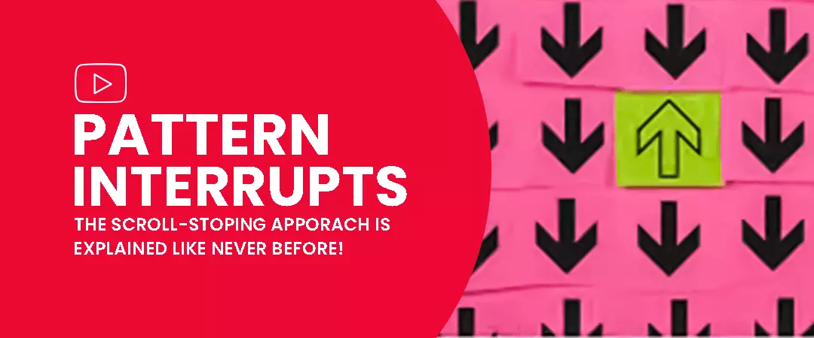
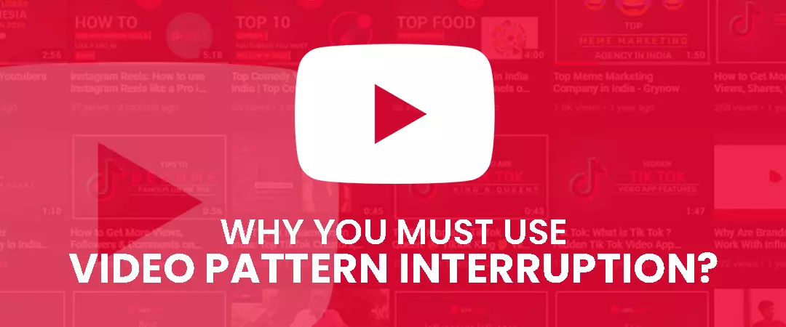
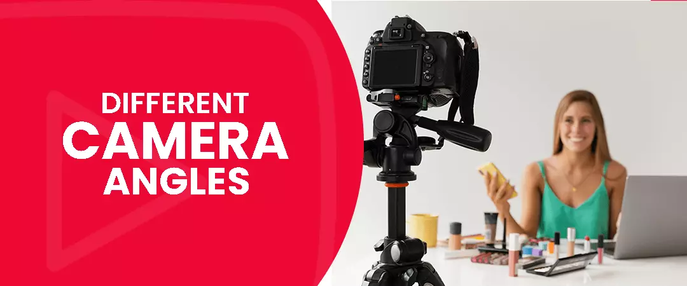
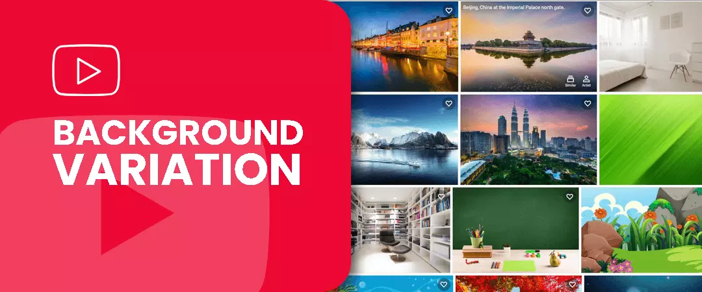
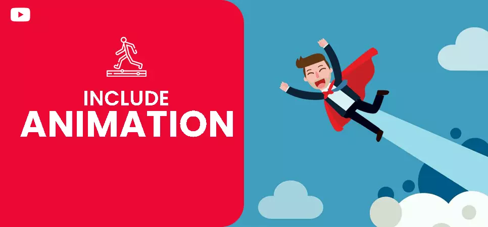
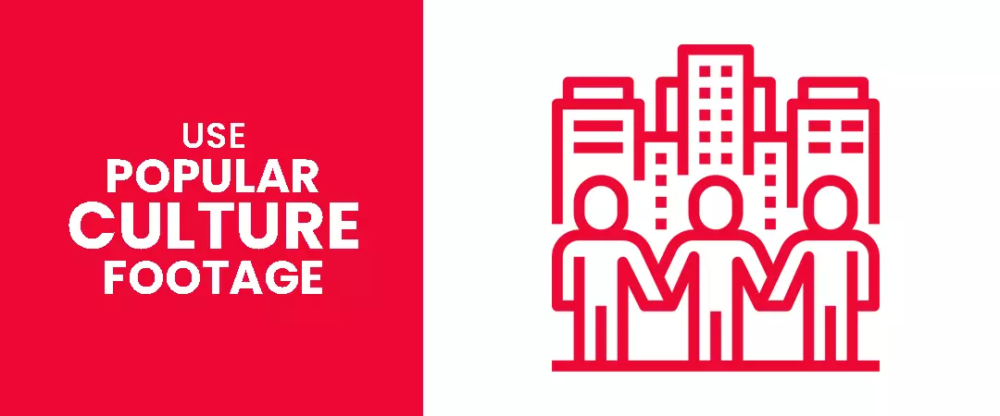
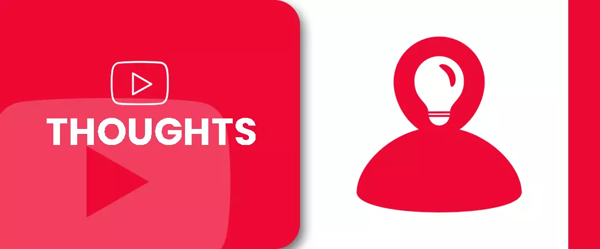
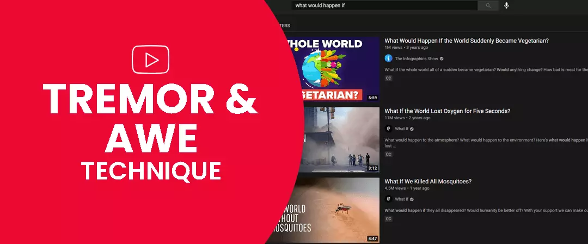

Contents
- 1. Pattern interrupts- The scroll-stopping approach is explained like never before!
- 2. Why You Must Use Video Pattern interruption?
- 3. Different & witching camera angles
- 4. Background Variation
- 5. Shoot in 4K
- 6. se B-Roll footage
- 7. Include Animation
- 8. Use Popular Culture/heritage footage
- 9. Animated text quotes
- 10. Animated text outburst or exclamation
- 11. Video snapshots
- 12. Thoughts
- 13. Tremor and Awe technique
Pattern interrupts- The scroll-stopping approach is explained like never before!

Pattern interrupts are minor, unpredicted actions & powerful tools that offer an element of surprise. They interpose your expectations of what is to come and encounter your intelligence’s predetermined notions giving your success traction. These elements are an astounding tool to include in video presentations. Whether you are creating a series of tutorial videos, or a demonstration highlighting the features of your product or service, pattern interrupts rudiments can be used to refocus, relocate, & regenerate your target audience’s mental, emotional, and behavioural state.
“Pattern interruption is a part of human communication in general. Public speakers have always understood that in order to be engaging, they need to change things up by being witty, animated, or unique.” - Jeff Coon, Partner at Stream Creative
Why You Must Use Video Pattern interruption?

Keeps your target audience engaged
Interrupts elicits a reaction from your viewers in terms of likes, comments, shares & clicks, there by sparking a rise in YouTube engagement.
Eradicates monotony
They make your video exciting and help viewers to not lose interest and start dozing off, or bounce off your page. This also contributes to greater YouTube watch time.
Positions your brand/product constructively
You can position your brand and content as new, original, and innovative.
Get higher rankings with algorithm
When you get successful in keeping your audience watching via Pattern Interrupts. YouTube rewards your videos with higher rankings on their search engine (more organic views too).
Timing
When you add too much video pattern interruption, viewers can get distracted and may even lose interest completely. You can use a pattern interrupt every 30 seconds. But this is not a hard-fast regulation. You can sprinkle them based on the flow of your script and discussion.
How to add pattern interrupts in YouTube videos
You can add different types of pattern interrupts in your videos.
1. Different & witching camera angles

Any graphic or audio modification is measured as an interruption, but be strategical in your approach and execution. Being smart & cognizant of both imagination and marketing objectives is the best tactic to go about executing effective pattern interruptions in your video. You can have 2 or more cameras, and use them in a great way to interrupt the video pattern by merely switching the camera angle. Let your creative juices flow by trying innovative interruptions!
ExampleShooting with 2 cameras for your video content marketing clients. You can focus the first camera directly in front of the prospect and the second camera can capture a side angle or side profile. At around 15-30 seconds, you can switch from a close-up of your face to a wider view from the waist up. You must not overdo this change of perspective, but employ efficiently or the viewers would get bored with your video. You can also leverage pattern interrupt techniques, often in your documentaries to provide a professional feel to the interview.
2. Background Variation

Do you want to disorder the autopilot observer mode that many users will enter after watching a video over a short period of time? Background changes are great & effective pattern interrupts as a sudden change can grasp your attention quickly.
Example
If you are representing a tutorial video, you can show tips that relate to what you’re saying crossways the screen. Also, if your background is a cityscape, momentarily alter it to an underwater or outer space scene. Be imaginative!
3. Shoot in 4K
HD is filmed at 1920×1080, but 4K is filmed at 3840×2160. Most of the YouTube videos are of HD quality but if you enhance your video with 4K mode, which is shot at a higher rate it would result in crunchier quality. The hoax is to shoot in 4K and then export your video in HD format. The influence of 4K is the aptitude to resize and relocate the image during the editing process which you can’t enjoy with HD video. Hence, with 4K footage, you get another YouTube pattern interrupt technique, using which you can repetitively zoom in and zoom out and caricaturist the upshots of having 2 cameras.
Also Read: Equipment required to start a Youtube Channel in 2021
4. Use B-Roll footage
According to Wikipedia, B-roll, B roll, B-reel or B reel is supplemental or alternative footage intercut with the main shot. B-roll footage is often shot after the main interview is shot, to provide supporting scenes for what was said by the interview subject. You must have seen in a documentary; intercuts between A and B roll continuously. It shifts strategically a user’s attention watching an interview to the next moment with an intercut between complementary footage with a voice-over.
Examples
- Everyday activities.
- Favourite interests.
- Your business location
- At work in your office
- Your team/employees.
5. Include Animation

Cartoons, caricatures, or animations are effective pattern interrupts to boost the quality of your video. They may be onerous and expensive to make. But if you’re the digital corresponding of a Shin Chan or Picasso, then certainly produce animations! According to Wikipedia, Animation is a method in which figures are manipulated to appear as moving images. The effect of the animation is achieved by a rapid succession of sequential images that minimally differ from each other. These advocates undoubtedly strengthen the points you make in the video. If your budget is low, you can go for text animations too!
Keep scrolling to know more on how to use pattern interrupts in videos.
6. Use Popular Culture/heritage footage

A culture is a “way of life” that includes a number of things, including traditions, heritage, legacy, bequest, values, beliefs, behaviours, everyday activities, rituals, sacraments, norms & rules, substances, and much more. You can include snapshots/clops of a popular culture, which is a well-researched YouTube pattern interrupt technique! Many YouTubers, use this methodology and make their viewer astonished with wonder content. But make sure not to use too much as you must not ever violate copyright rules or trespass upon YouTube’s community guidelines & terms of service.
7. Animated text quotes
example. These speech marks relocate your target audience’s attention and make them think they might be leaving a significant delicacy if they don’t pay devotion to your quote.
8. Animated logo reveals
Here is one of the next most terrific pattern interrupt technique to promote your marketing content from within a video. An animated logo placed at the end of your video, helps your audience remember your brand’s recognition attributes-logo, colours, design, or name. By sustaining your brand colours & design, add animation to them to make your logo extraordinary good! Whatever you can do to offer a startling change or disruption in their hopes will cause them to pay deeper attention to the content you are presenting
9. Animated text questions
Questions arise instigation, eagerness, and persuade the viewer to think. Animated thoughts and queries grab user attention and make your viewers engaged, resulting in higher audience retention.
10. Animated text outburst or exclamation
Lustrously coloured exclamations like wow, oh no, now, ouch, what, expiring, or today, or your own efficacy like wowzah, OMG, or LOL what, smash, pow, bang, bravo, awesome, or bam can add superfluous clout of action to your video. Hold your viewer’s attention and make them refocus on what you’re bestowing in your content.
11. Humour
Humour is a prevailing pattern interrupt technique. Hilarious text, images, animations, or graphics can get a giggle from your viewers and keep them engaged with your video content. You can tell a joke, add a funny related image, or use an entertaining cartoon character to engage your audience.
12. Video snapshots
Integrating video snapshots within webinars, demonstrations or tutorials also helps recollect the attention of your target audience. Video inside a video speaks a lot itself. It brings your viewer’s attention back to your video. If you select to use a video pop-up, use it without audio so you or your video is still perceived.
13. Sound effects
Unexpected sound is a remarkable pattern interrupt technique. Musical notes, a thwack of thunder, clapping, audience cheering or even a loud shout can be all you need to re-engage your viewers out of their fantasizing and bring them back to your video.
14. Polls
You can introduce polls, a pattern interrupt example, within your videos to cause an instant transferring of attention. It can bring lost viewer interest and keep them engaged with a pop-up poll and answer possibilities.
15. Thoughts

You can make them animated and interrupt your video to refocus your audience’s courtesy.
16. Tremor and Awe technique

You can surprise your audience with statements like, ‘What would happen if’ or ‘Awe love this’. Refocusing your target audience’s interest can be easier if you use the best & effective pattern interrupts. Grow your YouTube channel now!
Feel free to share!